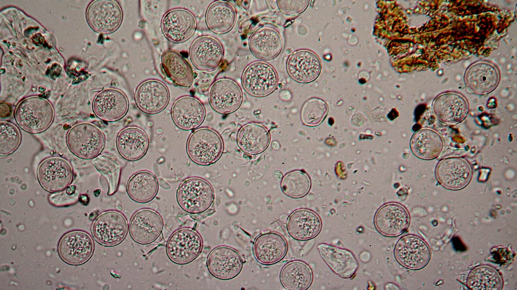
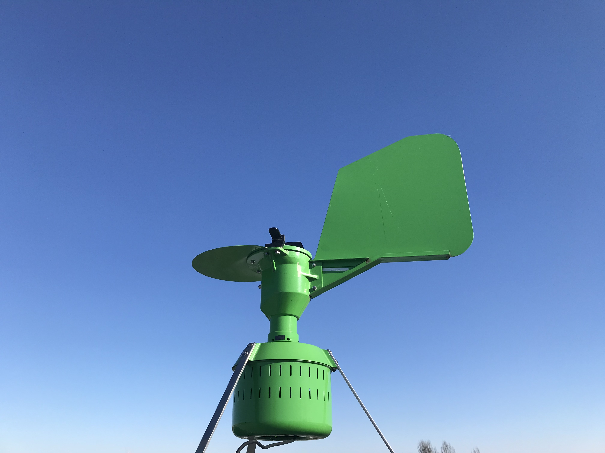

Allergy season starts earlier each year due to climate change and pollen transport
Scientists in Munich study how pollen from far distances – sometimes hundreds of kilometers away – affects the length of allergy seasons in Germany
By Nora Belblidia, science writer
The
climate crisis is contributing to longer pollen seasons, but one element that’s often understudied is pollen transport.The spring irritant can travel from hundreds of kilometers away; understanding how much pollen is non-local can give scientists better insight into the length, timing, and severity of allergy season.Researchers at the Technical University of Munich have analyzed data in Bavaria, Germany in order to better understand how the pollen season is changing over time.
aperture':'0','credit':'Shutterstock','camera':'','caption':'','created_timestamp':'0','copyright':'Copyright (c) 2020 Shutterstock.No use without permission.','focal_length':'0','iso':'0','shutter_speed':'0','title':'Hazel,Catkins,On,A,Tree,Branch,In,Sunlight,Close-up.,Forest','orientation':'1'}' data-image-title='Hazel,Catkins,On,A,Tree,Branch,In,Sunlight,Close-up.,Forest' data-large-file='https://frontiersinblog.files.wordpress.com/2021/02/frontiers-allergy-hazel-pollen-season-climate-change-long-distance-dispersal.jpg?w=940' data-medium-file='https://frontiersinblog.files.wordpress.com/2021/02/frontiers-allergy-hazel-pollen-season-climate-change-long-distance-dispersal.jpg?w=300' data-orig-file='https://frontiersinblog.files.wordpress.com/2021/02/frontiers-allergy-hazel-pollen-season-climate-change-long-distance-dispersal.jpg' data-orig-size='6000,4000' data-permalink='https://blog.frontiersin.org/hazelcatkinsonatreebranchinsunlightclose-up-forest/' sizes='(max-width: 1024px) 100vw, 1024px' src='https://frontiersinblog.files.wordpress.com/2021/02/frontiers-allergy-hazel-pollen-season-climate-change-long-distance-dispersal.jpg?w=2048' srcset='https://frontiersinblog.files.wordpress.com/2021/02/frontiers-allergy-hazel-pollen-season-climate-change-long-distance-dispersal.jpg?w=1024 1024w, https://frontiersinblog.files.wordpress.com/2021/02/frontiers-allergy-hazel-pollen-season-climate-change-long-distance-dispersal.jpg?w=2048 2048w, https://frontiersinblog.files.wordpress.com/2021/02/frontiers-allergy-hazel-pollen-season-climate-change-long-distance-dispersal.jpg?w=150 150w, https://frontiersinblog.files.wordpress.com/2021/02/frontiers-allergy-hazel-pollen-season-climate-change-long-distance-dispersal.jpg?w=300 300w, https://frontiersinblog.files.wordpress.com/2021/02/frontiers-allergy-hazel-pollen-season-climate-change-long-distance-dispersal.jpg?w=768 768w'>
Posted On: 2021-02-25T00:00:00





Content Date: 2021-02-25
Download Date: 2021-07-10
Document ID: L0C04F22H